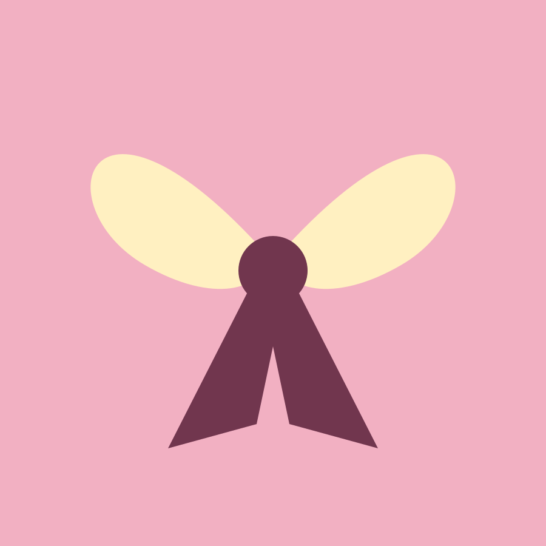
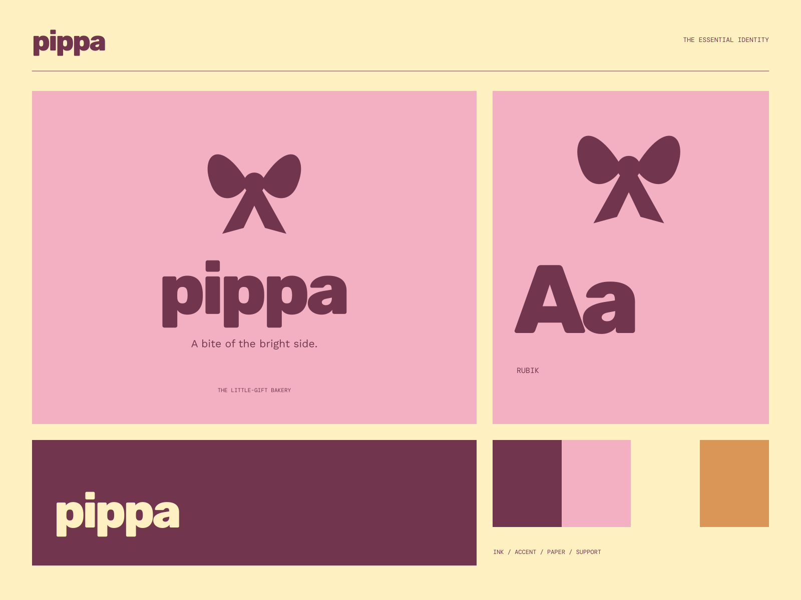

01
Baked with a little care
Good ingredients and plenty of attention to the small things.
SMALL BAKES / BIG GOOD FEELINGS
A bite of the bright side. A bright side, baked in.

A coherent little world
A bright side, baked in. A bite of the bright side.
01
Good ingredients and plenty of attention to the small things.
02
A simple pleasure that feels like a small present.
03
Sweet things for sharing, celebrating, or just because.

The point of view
Folded ribbons, sculptural pastry-like swirls, pink gift boxes, and exuberant heavy type. Every useful label is part of a generous little celebration.